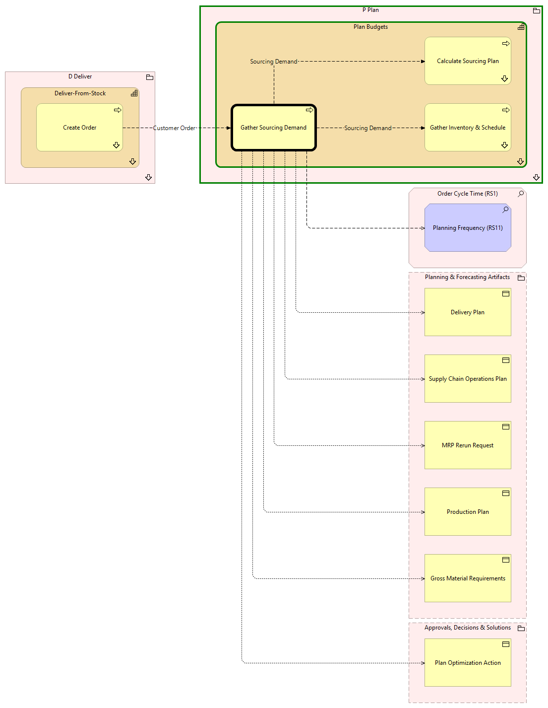

Gather Sourcing Demand - Context
(
)

generated_by
build_archi_xml.py::gen_proc_node_context_view
generator_path
pedro/capabilities/build_archi_xml_assign/build_archi_xml_assign.py
run_at
2026-10-10T17:57:44
view_type
process_context
P Plan
Plan Budgets
Calculate Sourcing Plan
Calculate Sourcing Plan - Context
Gather Sourcing Demand
Gather Inventory & Schedule
Gather Inventory & Schedule - Context
Plan Budgets - Processes
P Plan - Processes
D Deliver
Deliver-From-Stock
Create Order
Create Order - Context
Deliver-From-Stock - Processes
D Deliver - Processes
Order Cycle Time (RS1)
Planning Frequency (RS11)
Planning & Forecasting Artifacts
Gross Material Requirements
Production Plan
MRP Rerun Request
Supply Chain Operations Plan
Delivery Plan
Approvals, Decisions & Solutions
Plan Optimization Action
Sourcing Demand
Gather Sourcing Demand
Calculate Sourcing Plan
Sourcing Demand
Gather Sourcing Demand
Gather Inventory & Schedule
Gather Sourcing Demand
Planning Frequency (RS11)
Gather Sourcing Demand
Gross Material Requirements
Gather Sourcing Demand
Production Plan
Gather Sourcing Demand
MRP Rerun Request
Gather Sourcing Demand
Supply Chain Operations Plan
Gather Sourcing Demand
Delivery Plan
Gather Sourcing Demand
Plan Optimization Action
Customer Order
Create Order
Gather Sourcing Demand